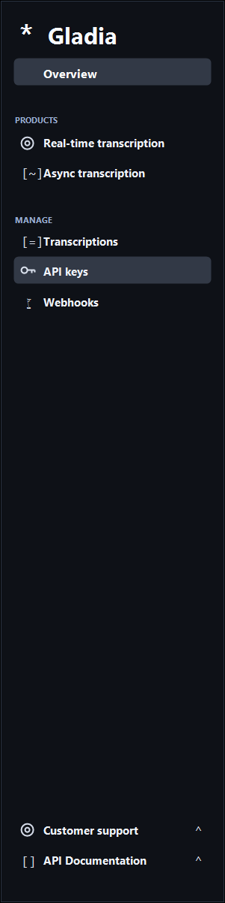
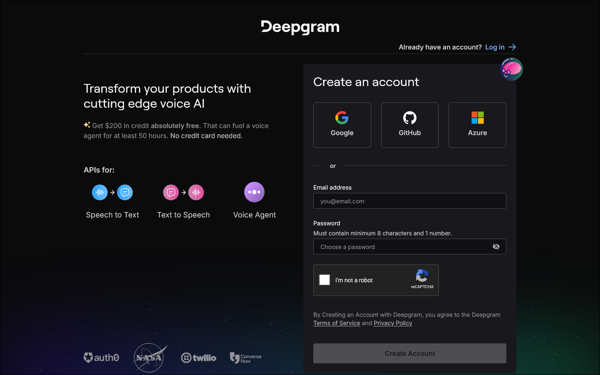
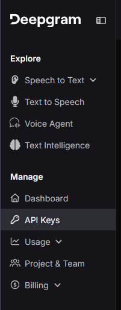
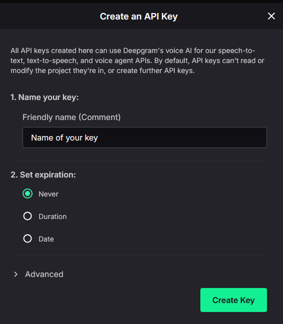
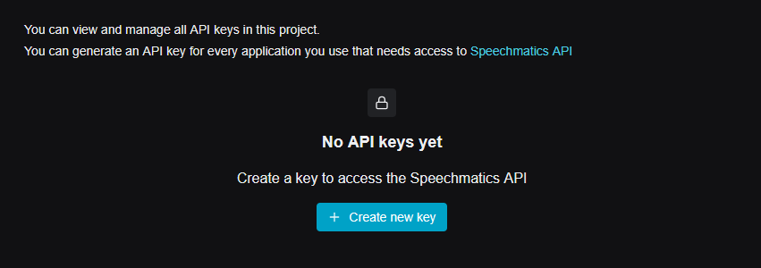
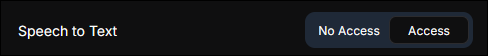

SubVox Pro : configuration des fournisseurs
SubVox Pro ne fournit aucune clé API : chaque service s’utilise avec votre propre clé, à coller dans
Tools ▸ SubVox Pro ▸ Settings ou dans le panneau du fournisseur, dans la fenêtre SubVox Pro.
Les clés restent dans les préférences Unity de votre ordinateur (EditorPrefs), jamais dans le projet, ses commits
ou ses builds. Les conditions de chaque service sont détaillées dans les mentions des tiers.
Les offres gratuites et les tarifs changent souvent. Les chiffres ci-dessous datent de septembre 2026 : vérifiez toujours l’offre en vigueur sur le site du fournisseur. Les boutons sont cités tels qu’ils apparaissent sur chaque site, pour suivre les captures plus facilement.
Accès rapides
| Catégorie | Fournisseurs |
|---|---|
| Transcription | AssemblyAI · Gladia · Deepgram · Speechmatics · ElevenLabs · Rev AI · OpenAI |
| Traduction | DeepL · Google Cloud Translation · OpenAI · Claude · Gemini · DeepSeek · Hy-MT2 local |
| Doublage | ElevenLabs · InWorld AI · Gemini · OpenAI · Google Cloud TTS · Azure · Kokoro · Chatterbox |
| Alignement local | Qwen3 Forced Aligner |
| Référence | Bonnes pratiques · Quel fournisseur choisir ? · Offres gratuites · Où coller une clé · Après l’enregistrement |
Compatibilité des langues
Langues proposées dans SubVox Pro pour chaque service. Catalogue dynamique veut dire que la liste dépend du
compte, du modèle et des voix du fournisseur : c’est alors le sélecteur de voix qui fait foi.
Les variantes comme en-US ou pt-BR sont rangées sous leur langue principale.
| Service | Fournisseur ou moteur | Langues disponibles |
|---|---|---|
| STT | AssemblyAI | Multilingue, détection automatique ; dépend du modèle choisi. |
| STT | Gladia | Multilingue, détection automatique ; dépend du modèle choisi. |
| STT | Deepgram | Néerlandais, anglais, français, allemand, hindi, italien, japonais, portugais, russe, espagnol et mode multilingue. |
| STT | Speechmatics | Arabe, chinois mandarin, néerlandais, anglais, français, allemand, hindi, italien, japonais, coréen, polonais, portugais, russe, espagnol et turc. |
| STT | ElevenLabs | Arabe, chinois, néerlandais, anglais, français, allemand, hindi, italien, japonais, coréen, polonais, portugais, russe, espagnol et turc. |
| STT | Rev AI | Arabe, chinois mandarin, néerlandais, anglais, français, allemand, hindi, italien, japonais, coréen, polonais, portugais, russe, espagnol et turc. |
| STT | OpenAI, gpt-transcribe, gpt-4o-transcribe, gpt-4o-mini-transcribe, whisper-1 |
Arabe, chinois, néerlandais, anglais, français, allemand, hindi, italien, japonais, coréen, polonais, portugais, russe, espagnol et turc. |
| STT | Whisper large-v2, large-v3, large-v3-turbo, local | Chinois, néerlandais, anglais, français, allemand, italien, japonais, coréen, portugais, russe, espagnol et détection automatique. |
| STT | Parakeet TDT 0.6B v3, local | Bulgare, croate, tchèque, danois, néerlandais, anglais, estonien, finnois, français, allemand, grec, hongrois, italien, letton, lituanien, maltais, polonais, portugais, roumain, russe, slovaque, slovène, espagnol, suédois et ukrainien, détectés automatiquement. |
| Traduction | DeepL | Arabe, bengali, birman, cantonais, chinois simplifié/traditionnel, tchèque, néerlandais, anglais US/UK, filipino, français, allemand, gujarati, hébreu, hindi, indonésien, italien, japonais, kazakh, coréen, malais, marathi, mongol, persan, polonais, portugais BR/PT, russe, espagnol, tamoul, télougou, thaï, turc, ukrainien, ourdou et vietnamien. Ce sélecteur est le même pour tous les fournisseurs de traduction, Hy-MT2 compris. |
| Traduction | Google Cloud Translation | Même sélecteur ; Google vérifie ce que le modèle prend en charge. |
| Traduction | OpenAI, Claude, Gemini, DeepSeek | Même sélecteur ; la qualité selon les langues dépend du modèle. |
| Traduction | Hy-MT2 1.8B / 7B, local | Toutes les langues du sélecteur sont prises en charge. |
| TTS | ElevenLabs | Flash v2.5 : arabe, bulgare, chinois, croate, tchèque, danois, néerlandais, anglais, filipino, finnois, français, allemand, grec, hindi, hongrois, indonésien, italien, japonais, coréen, malais, norvégien, polonais, portugais, roumain, russe, slovaque, espagnol, suédois, tamoul, turc, ukrainien et vietnamien. Multilingual v2 : mêmes langues sans hongrois, norvégien ni vietnamien. Eleven v3 : plus de 70 langues, dont aussi bengali, gujarati, hébreu, kazakh, marathi, persan, swahili, télougou, thaï et ourdou. |
| TTS | InWorld | Catalogue dynamique selon les voix de votre compte. |
| TTS | Gemini, clé AI Studio | Environ 75 langues détectées dans le texte, dont arabe, chinois, néerlandais, anglais, français, allemand, hindi, italien, japonais, coréen, polonais, portugais, russe, espagnol, turc, ukrainien et vietnamien. Chaque voix parle toutes les langues. |
| TTS | OpenAI, gpt-4o-mini-tts, tts-1, tts-1-hd | Environ 55 langues détectées dans le texte, celles de Whisper, dont arabe, chinois, néerlandais, anglais, français, allemand, hindi, italien, japonais, coréen, polonais, portugais, russe, espagnol, turc, ukrainien et vietnamien. Voix pensées pour l’anglais, mais multilingues. |
| TTS | Google Cloud TTS | Catalogue dynamique, incluant les voix Gemini compatibles. |
| TTS | Azure AI Speech | Catalogue dynamique selon les voix neuronales et la région configurée. |
| TTS | Kokoro, local | Anglais, voix américaines et britanniques. |
| TTS | Chatterbox Multilingual, local | Arabe, chinois, danois, néerlandais, anglais, finnois, français, allemand, grec, hindi, italien, coréen, malais, norvégien, polonais, portugais, russe, espagnol, swahili, suédois et turc. Japonais avec son ajout facultatif. |
| Alignement | Qwen3-ForcedAligner-0.6B Q4 ONNX, local | Cantonais, chinois, anglais, français, allemand, italien, japonais, coréen, portugais, russe et espagnol. |
Les catalogues des services en ligne évoluent sans dépendre de SubVox Pro : actualisez les modèles et les voix quand un service ajoute une langue. Pour Qwen, Kokoro et Chatterbox, les listes ci-dessus correspondent aux modèles installés par SubVox Pro.
Chatterbox : précision par langue
Dans quelle mesure le moteur local Chatterbox prononce les bons mots, mesuré sur 30 doublages par langue
(15 répliques de jeu, chacune avec deux voix). Chaque doublage a été retranscrit par huit moteurs de transcription,
et le tableau retient le résultat du moteur médian : un moteur qui entend mal ne pèse pas sur Chatterbox. Les
répliques, dans les 22 langues, se trouvent dans
Documentation/ChatterboxAccuracyCorpus.csv, pour refaire le test avec vos voix.
| Langue | Caractères incorrects | Appréciation |
|---|---|---|
| Portugais | 0,1 % | Excellent |
| Italien | 0,2 % | Excellent |
| Espagnol | 0,4 % | Excellent |
| Hindi | 0,4 % | Excellent |
| Anglais | 0,5 % | Excellent |
| Allemand | 0,5 % | Excellent |
| Malais | 0,7 % | Excellent |
| Russe | 0,8 % | Excellent |
| Néerlandais | 1,0 % | Excellent |
| Finnois | 1,2 % | Bon |
| Grec | 1,2 % | Bon |
| Arabe | 1,4 % | Bon |
| Suédois | 1,6 % | Bon |
| Français | 1,9 % | Bon |
| Japonais | 2,1 % | Bon |
| Chinois | 2,4 % | Bon |
| Danois | 3,8 % | Réécouter les doublages |
| Polonais | 4,1 % | Réécouter les doublages |
| Norvégien | 4,8 % | Réécouter les doublages |
| Coréen | 5,2 % | Réécouter les doublages |
| Swahili | 5,8 % | Réécouter les doublages |
| Turc | 8,1 % | Réécouter les doublages |
La génération comporte une part de hasard : deux prises de la même réplique diffèrent un peu. Plus le chiffre est bas, plus les erreurs sont rares. La plupart concernent le premier mot, mal prononcé ou sauté. Dans les langues marquées Réécouter les doublages, jusqu’à une réplique sur quinze est sortie brouillée (dans une autre langue, ou avec des mots qui n’existent pas) : écoutez les doublages et régénérez une prise ratée avec son badge REGEN.
Bonnes pratiques
Une clé API est l’équivalent d’un mot de passe : gardez-la secrète, même pour un simple test.
- Une clé par outil ou par projet : vous pourrez la révoquer sans casser le reste.
- Ne collez jamais de clé dans un script, une scène, un prefab, un message de support, Discord, une issue GitHub
ou un commit. SubVox Pro la garde dans
EditorPrefs, sur votre machine uniquement. - Copiez tout de suite une clé qui ne s’affiche qu’une fois, au besoin dans un gestionnaire de mots de passe. Une clé perdue se révoque et se remplace.
- Limitez les permissions à ce dont vous avez besoin : STT pour la transcription, traduction, TTS pour le doublage.
- Choisissez une durée de validité adaptée : courte pour des tests, plus longue en production. Certains services proposent des clés sans expiration.
- Fixez un budget, un quota ou une alerte de facturation si le service le permet, pour éviter les mauvaises surprises en cas de boucle ou d’imports répétés.
- Remplacez une clé qui a pu être exposée (capture, commit, message, build) : révoquez-la sur le site du service, puis enregistrez la nouvelle dans SubVox Pro.
- Ne partagez pas une clé personnelle avec l’équipe : préférez des comptes individuels ou une clé d’équipe, selon ce que permet le service.
- Effacez les clés dont vous ne vous servez plus avec Clear API Keys dans Settings, en particulier après un test sur une machine partagée.
Quel fournisseur choisir ?
| Fonction | Fournisseurs |
|---|---|
| Transcription (audio vers sous-titres horodatés) | AssemblyAI, Gladia, Deepgram, Speechmatics, ElevenLabs, Rev AI, OpenAI ; ou Whisper et Parakeet, hors connexion, sans clé, Windows uniquement. Guide local |
| Traduction | DeepL, Google Cloud Translation, OpenAI, Claude, Gemini, DeepSeek ; ou Hy-MT2, avec llama.cpp, hors connexion, sans clé, Windows uniquement. Guide local |
| Doublage TTS | ElevenLabs, InWorld AI, Gemini, OpenAI, Google Cloud TTS, Azure ; ou Kokoro, anglais local, et Chatterbox, 21 langues et japonais facultatif, avec clonage vocal. |
| Alignement exact des mots (texte inchangé) | Qwen3-ForcedAligner-0.6B Q4 ONNX, hors connexion, sans clé ni Python/PyTorch, Windows uniquement. |
| Traduction humaine aller-retour | Google Sheets, connexion OAuth. Guide |
Tools ▸ SubVox Pro ▸ Provider Comparison compare fonctions, prix, offres gratuites et droits commerciaux. Il ne vous faut une clé que pour les services que vous utilisez. Pour démarrer sans compte ni frais : Whisper ou Parakeet, Hy-MT2, et Kokoro ou Chatterbox. DeepL et Gemini ont aussi des offres gratuites.
Résumé des offres gratuites
SubVox Pro fonctionne de la même façon avec un compte gratuit ou payant : mêmes clés, mêmes requêtes. Seuls changent les volumes autorisés et, parfois, ce que vous avez le droit de faire des résultats.
| Fournisseur | Gratuité, à vérifier | Carte bancaire ? | Utilisation commerciale de l’offre gratuite ? |
|---|---|---|---|
| AssemblyAI | Crédit unique d’environ 50 $, environ 330 h | Non | Oui ; les données peuvent entraîner les modèles sauf opposition. |
| Gladia | 10 h/mois | Non | Oui ; l’audio de l’offre gratuite peut servir à entraîner les modèles. |
| Deepgram | Crédit unique de 200 $ | Non | Oui, production comprise. |
| Speechmatics | Crédit unique de 100 $ | Non | Oui ; les transcriptions peuvent améliorer les modèles. |
| ElevenLabs | Environ 10 min/mois pour voix/transcription | Non | Non, usage non commercial et attribution obligatoire. Offres payantes dès environ 5 $/mois. |
| Rev AI | Crédit unique de 5 h | Non | Non précisé : vérifier les conditions. |
| DeepL Developer | Crédit unique de 1 000 000 caractères | Vérification possible, sans débit | Oui ; DeepL peut conserver les textes de l’API gratuite. |
| Google Cloud Translation | 500 000 caractères/mois et 300 $ d’essai | Oui, compte de facturation | Oui. |
| Google Cloud TTS | 1 M caractères/mois Neural2/WaveNet, 4 M Standard ; Gemini/Chirp via Vertex AI | Oui | Oui. |
| Azure AI Speech | F0, environ 0,5 M caractères/mois en TTS neuronal | Vérification, sans débit sur F0 | Non ; les droits commerciaux nécessitent une ressource payante S0. |
| OpenAI, STT/traduction/TTS | Prépayé dès 5 $, parfois crédits d’essai | Oui | Oui, sans véritable offre gratuite. Informer les joueurs des voix générées par IA. |
| Claude | Environ 5 $ d’essai dans certaines régions | Oui, crédits prépayés | Oui, sans véritable offre gratuite. |
| Gemini | Offre gratuite limitée en débit, sans facturation | Non | Oui ; Google peut utiliser les requêtes gratuites pour améliorer ses produits. |
| InWorld | Environ 70 minutes de TTS, une seule fois | Non au démarrage | Oui, licence commerciale incluse. |
| DeepSeek | Pas d’offre gratuite permanente, paiement à l’usage | Oui, solde prépayé | Oui, uniquement prépayé. |
Utilisation commerciale : distribuer les textes, traductions ou doublages dans un jeu ou un produit vendu. Pour doubler un jeu publié, ElevenLabs et Azure demandent une offre payante. Ce résumé reflète les conditions de septembre 2026 ; il ne s’agit pas d’un conseil juridique, et les conditions actuelles du fournisseur priment. Les moteurs locaux (Whisper, Parakeet, Hy-MT2, Kokoro, Chatterbox et Qwen3) sont utilisables gratuitement à des fins commerciales. Il est d’usage de créditer NVIDIA pour Parakeet : voir les mentions des tiers.
Où coller votre clé dans SubVox Pro
La clé peut se coller à deux endroits, qui reviennent au même : elle est enregistrée dans EditorPrefs, sur cet
ordinateur seulement. Tools ▸ SubVox Pro ▸ Settings réunit tous les fournisseurs : collez chaque clé sur sa
ligne, le champ la masque. STT, TR et TTS désignent la transcription, la traduction et le doublage.
Clear API Keys les efface toutes.

Vous pouvez aussi ouvrir le panneau du fournisseur dans la fenêtre SubVox Pro, saisir la clé et cliquer sur Save. Le badge API Ready confirme qu’elle est enregistrée ; Clear la retire.

Fournisseurs de transcription
AssemblyAI
Utilisé pour : transcription avec timing par mot.
- Créez un compte (e-mail ou SSO) sur https://www.assemblyai.com/dashboard/signup. Sans carte bancaire,
vous obtenez environ 50 $ de crédits, soit 330 heures.

- Une fois votre e-mail vérifié, ouvrez Manage ▸ API Keys.

- Copiez la Default API Key, ou cliquez sur Create new API key pour une clé dédiée.

- Nommez la nouvelle clé, par exemple
SubVoxPro, puis cliquez sur Create.
- Copiez la clé depuis sa ligne.

- Collez-la dans Settings ▸ AssemblyAI.
L’offre gratuite est limitée à deux projets et deux clés. Aide officielle.
Gladia
Utilisé pour : transcription.
- Inscrivez-vous sur https://app.gladia.io, par e-mail ou avec Google.

- Ouvrez API Keys dans la barre latérale.

- Créez si besoin une clé dédiée, avec un nom facile à reconnaître comme
SubVoxPro. Copiez tout de suite sa valeur complète : la liste n’en montre ensuite parfois qu’une partie.
Copiez tout de suite sa valeur complète : la liste n’en montre ensuite parfois qu’une partie.

- Collez-la dans Settings ▸ Gladia.
Offre gratuite : 10 h par mois, 20 appels par heure et 3 en parallèle au maximum. Aide.
Deepgram
Utilisé pour : transcription.
- Créez un compte sur https://console.deepgram.com/signup, sans carte bancaire. Le crédit offert de 200 $
expire un an après l’inscription.

- Ouvrez API Keys dans la console.

- Cliquez sur Create a New API Key.

- Nommez la clé et choisissez sa durée de validité avec Set expiration ; SubVox Pro n’impose rien.

- Copiez le secret et rangez-le en lieu sûr : Deepgram ne pourra plus l’afficher.

- Collez-le dans Settings ▸ Deepgram.
Speechmatics
Utilisé pour : transcription.
- Créez un compte sur https://portal.speechmatics.com : 100 $ de crédit offerts une fois, sans carte bancaire.

- Ouvrez Manage ▸ API Keys dans le projet.

- Cliquez sur Create new key.

- Nommez-la puis cliquez sur Generate new key.

- Copiez la clé avant de fermer la fenêtre : elle ne sera plus affichée.

- Collez-la dans Settings ▸ Speechmatics.
ElevenLabs
Utilisé pour : transcription Scribe et doublage TTS.
- Inscrivez-vous sur https://elevenlabs.io (e-mail ou SSO), sans carte bancaire. L’offre gratuite donne environ
10 minutes par mois, pour un usage non commercial et avec mention obligatoire. Un jeu publié demande une
offre payante.

- Ouvrez Developers, la section qui regroupe API, journaux, webhooks et variables d’environnement.

- Ouvrez API Keys puis Create Key.

- Nommez la clé. Avec Restrict Key, mettez Speech to Text et Text to Speech sur Access.



- Copiez la valeur avant de fermer : la clé complète ne s’affiche qu’une fois.

- Collez-la dans Settings ▸ ElevenLabs. La même clé sert à la transcription et au doublage.
L’API TTS utilise l’en-tête
xi-api-keyetPOST /v1/text-to-speech/:voice_id. Référence.
Rev AI
Utilisé pour : transcription.
- Créez un compte sur https://www.rev.ai/auth/signup, sans carte bancaire : 5 h de crédit sont offertes.

- Ouvrez Access Token, dans le menu ou sur https://www.rev.ai/access_token.

- Cliquez sur Generate si vous n’avez pas encore de token (deux au maximum peuvent être actifs).

- Copiez tout de suite la valeur complète, qui ne s’affiche qu’une fois : la liste n’en garde ensuite qu’un aperçu.

- Collez-le dans Settings ▸ Rev AI.
Fournisseurs de traduction
DeepL
Utilisé pour : traduction automatique avec choix de formalité.
- Sur https://www.deepl.com/pro-api, choisissez Sign up for free dans Developer.
DeepL vérifie votre e-mail et votre carte bancaire, sans rien prélever pour l’offre Developer, qui comprend
1 000 000 de caractères offerts une fois.

- Ouvrez Account ▸ API Keys, https://www.deepl.com/your-account/keys, puis copiez Authentication Key.

- Collez-la dans Settings ▸ DeepL. SubVox Pro reconnaît seul s’il s’agit d’une clé Free ou Pro.
Aide.
Google Cloud Translation
Utilisé pour : traduction automatique.
- Créez ou choisissez un projet sur https://console.cloud.google.com. Les nouveaux comptes reçoivent 300 $ d’essai valables 90 jours, et Translation offre 500 000 caractères par mois. Un compte de facturation est malgré tout obligatoire.
- Dans APIs & Services ▸ Library, activez Cloud Translation API avec Enable.
- Dans APIs & Services ▸ Credentials, choisissez Create credentials ▸ API key. Copiez la clé et, au besoin, limitez-la à Cloud Translation API.
- Collez-la dans Settings ▸ Google Translate.
Fixez un quota ou une alerte de budget avant la fin du crédit d’essai.
OpenAI
Utilisé pour : transcription, traduction par modèle de langage, report des styles de mots et doublage. Une seule clé sert à tout.
- Créez un compte ou connectez-vous sur https://platform.openai.com.

- Ouvrez API Keys dans le projet.

- Cliquez sur Create new secret key.

- Donnez-lui un nom si vous le souhaitez, vérifiez le projet et les permissions, puis cliquez sur Create secret key.

- Copiez tout de suite le secret : OpenAI ne l’affiche qu’une fois.

- Ajoutez des crédits depuis https://platform.openai.com/settings/organization/billing/overview.
Ou passez par le menu du compte, Organization settings ou Profile settings, puis Billing.


- Dans Billing, cliquez sur Add to credit balance : l’API puise dans ce solde.

- Choisissez le montant et le moyen de paiement, puis Continue. Le minimum est en général de 5 $.

- Collez la clé dans Settings ▸ OpenAI et choisissez le modèle dans le panneau concerné. En Text-to-Speech, gpt-4o-mini-tts propose 13 voix et suit les indications de jeu ; tts-1 est rapide et tts-1-hd mise sur la qualité, avec 9 voix chacun et sans indications de jeu. En Speech-to-Text, choisissez OpenAI, puis le modèle de transcription.
Timings de transcription :
gpt-transcribe(par défaut),gpt-4o-transcribeetgpt-4o-mini-transcribetranscrivent très bien, mais sans timing par mot. SubVox Pro répartit les mots sur les segments, ou sur tout le clip à défaut. Le texte est juste ; les timings sont estimés, et ajustables sur la timeline.whisper-1donne le vrai timing de chaque mot. Comme les mots arrivent sans ponctuation, SubVox Pro y reporte celle de la transcription complète.- AssemblyAI, Gladia, Deepgram, Speechmatics, ElevenLabs, Rev AI, Whisper local et Parakeet renvoient directement des mots ponctués et horodatés : préférez-les quand le timing compte.
La transcription OpenAI accepte des fichiers de 25 Mo au maximum.
Pour le doublage, les règles d’OpenAI imposent d’indiquer aux joueurs que les voix sont générées par IA, par exemple dans les crédits ou sur la page du jeu. Tarifs API.
Anthropic, Claude
Utilisé pour : traduction par modèle de langage et report des styles de mots.
- Créez un compte ou connectez-vous sur https://console.anthropic.com.

- Achetez des crédits avant toute requête : l’API est prépayée et refuse les appels sans solde.
Le premier montant proposé est souvent de 5 $.

- Ouvrez API keys dans la console Claude.

- Cliquez sur Create key.

- Choisissez l’espace de travail, donnez éventuellement un nom, puis cliquez sur Add.

- Copiez la clé tout de suite : elle ne sera plus affichée en entier.

- Collez-la dans Settings ▸ Claude.
Google, Gemini
Utilisé pour : traduction par modèle de langage et doublage. C’est l’option gratuite la plus simple, sans compte de facturation, et une seule clé sert aux deux.
- Connectez-vous avec Google sur https://aistudio.google.com.

- Ouvrez API keys, https://aistudio.google.com/app/apikey, puis Create an API key.

- Nommez la clé, choisissez ou créez un projet, puis créez-la.

- Copiez-la depuis son panneau de détails.

- Depuis la liste, vous pourrez ensuite recopier la clé, suivre la consommation ou configurer la facturation.

- Collez-la dans Settings ▸ Gemini. Pour doubler, choisissez Gemini dans Text-to-Speech : 30 voix multilingues (Kore, Puck, Leda…) qui suivent les indications de jeu. Modèles : gemini-3.1-flash-tts-preview (par défaut, le plus naturel), gemini-2.5-flash-preview-tts (moitié moins cher en usage payant) et gemini-2.5-pro-preview-tts (sans offre gratuite, facturation requise).
L’offre gratuite ne demande aucune facturation, mais limite le débit (voir Rate limit dans AI Studio). Les limites du doublage sont les plus strictes : quelques requêtes par minute et par jour. SubVox Pro patiente et réessaie quand Google indique un délai, et prévient clairement quand le quota du jour est épuisé. Activer la facturation relève ces limites, sans rien changer d’autre dans SubVox Pro. Les requêtes gratuites peuvent servir à améliorer les produits Google.
DeepSeek
Utilisé pour : traduction à bas coût, avec une API compatible OpenAI.
- Créez un compte ou connectez-vous sur https://platform.deepseek.com.
- Ajoutez du crédit avec Top up avant de commencer : sans solde, les requêtes échouent.
- Ouvrez API keys, https://platform.deepseek.com/api_keys, puis Create new API key. Nommez-la
(
SubVoxPro, par exemple) et copiez-la tout de suite : elle ne s’affiche en entier qu’une fois. - Collez-la dans Settings ▸ DeepSeek, puis choisissez le modèle dans le panneau de traduction.
Doublage par synthèse vocale
Le doublage ElevenLabs utilise la même clé que la transcription ; une clé restreinte doit avoir Text to Speech: Access. Le clonage ElevenLabs (Instant Voice Cloning, sur une offre payante) demande en plus l’accès en écriture à Voices, pour créer, retrouver et supprimer les voix clonées. Le doublage Gemini utilise la clé Gemini, sans OAuth ni facturation, contrairement aux voix Gemini de Google Cloud décrites plus bas. Le doublage OpenAI utilise la clé OpenAI.
InWorld AI
Utilisé pour : doublage des pistes traduites.
- Créez un compte sur https://studio.inworld.ai.

- Ouvrez API Keys dans votre espace de travail.

- Cliquez sur Generate new key.

- Donnez-lui un nom facile à reconnaître. Choisissez Standard (sauf besoin particulier d’une clé
realtime-only) et gardez les permissions nécessaires au doublage.

- Copiez Basic (Base64).
 La clé reste ensuite copiable depuis la liste.
La clé reste ensuite copiable depuis la liste.

- Collez-la dans Settings ▸ InWorld.
Offre gratuite : environ 70 minutes de doublage, une seule fois, avec licence commerciale. TTS Playground permet d’écouter les voix. Premiers pas.
Google Cloud Text-to-Speech
Utilisé pour : doublage des pistes traduites. Une seule connexion donne accès à deux familles de voix : les voix classiques (Standard, WaveNet, Neural2, Chirp/Chirp3-HD), via Cloud Text-to-Speech API, et les voix Gemini (Leda, Achird, Aoede…), multilingues et pilotables par une indication libre, via Vertex AI.
Ce fournisseur passe par OAuth, et non par une clé API : Vertex AI exige la permission
aiplatform.endpoints.predict, qu’une clé API ne porte pas, alors que le compte Google connecté l’a s’il possède
ou modifie le projet.
- Créez ou choisissez un projet sur https://console.cloud.google.com. Les nouveaux comptes reçoivent 300 $ d’essai valables 90 jours. Un compte de facturation est malgré tout obligatoire.
- Dans APIs & Services ▸ Library, activez Cloud Text-to-Speech API et, pour Gemini, Vertex AI API
(
aiplatform.googleapis.com), et non l’ancien AI Platform (ml.googleapis.com). Vertex AI n’est pas nécessaire si vous n’utilisez que les voix classiques. - Dans OAuth consent screen, choisissez External pour User type / Audience et ajoutez votre compte
aux Test users. Avec Internal, les comptes Gmail personnels sont refusés (
403: org_internal). - Dans Credentials ▸ Create credentials ▸ OAuth client ID, choisissez Desktop app et copiez
Client ID et Client secret. Le type Desktop autorise la connexion locale
http://127.0.0.1, comme pour Google Sheets. - Dans Text-to-Speech, choisissez Google Cloud, collez ces deux valeurs, puis Connect…. Connectez-vous dans le navigateur. L’avertissement « application non vérifiée » est normal en mode Testing : choisissez Continue. Le projet utilisé pour le quota et la facturation est déduit du Client ID. Les identifiants et le refresh token restent dans les préférences de cet ordinateur.
Choisissez ensuite une voix. Les voix classiques s’affichent sous la forme Tier Leaf (locale), par exemple
Neural2 A (fr-FR) ; les voix Gemini sous la forme Name · Gemini, sans filtre de langue puisqu’elles sont
multilingues. Le bouton bulle voice direction devient alors actif : décrivez le ton voulu, par exemple
really sad, close to mental breakdown. Cette indication accompagne chaque ligne.
Les voix classiques puisent dans le quota mensuel de Cloud TTS (environ 1 M de caractères en Neural2/WaveNet et 4 M en Standard). Les voix Gemini et Chirp sont facturées via Vertex AI, à un autre tarif : fixez une alerte de budget. Tarifs.
Azure AI Speech
Utilisé pour : doublage avec des voix neuronales multilingues. Fonctionne avec une clé d’abonnement et une région, sans OAuth.
Créez un compte sur https://azure.microsoft.com/free. Une carte bancaire sert à vérifier votre identité, mais l’offre F0 plafonne l’usage au lieu de le facturer : rien n’est prélevé.
Dans https://portal.azure.com, cliquez sur Create a resource, recherchez Speech et choisissez la tuile Speech publiée par Microsoft (bouton Create, et non une offre Marketplace Subscribe). Renseignez l’abonnement, le groupe de ressources, la Region, le nom et Pricing tier F0 (free), puis Review + create. Notez la région.
Une fois la ressource déployée, ouvrez Keys and Endpoint, copiez KEY 1 et notez Location/Region (
westeurope, par exemple).Collez la clé dans Settings ▸ Azure Speech. Dans Text-to-Speech, choisissez Azure et la même région.
La clé et la région doivent venir de la même ressource, sinon Azure répond
401. Indiquez le code court (westeurope,eastus), pas le nom affiché comme « West Europe ».
F0 : environ 0,5 M de caractères de voix neuronales par mois, pour l’évaluation uniquement. Pour exploiter l’audio commercialement, il faut une ressource S0 payante avant de doubler un jeu publié. Tarifs.
Après l’enregistrement d’une clé
Le panneau affiche API Ready dès qu’une clé est enregistrée. Si un appel échoue, vérifiez que la clé a été copiée en entier, qu’il reste du crédit ou du quota sur le compte, et que votre machine a accès au réseau. Clear API Keys, dans Tools ▸ SubVox Pro ▸ Settings, efface toutes les clés enregistrées sur cet ordinateur.